Configure Foundry for consumer mode
Before building consumer-facing applications, you must first configure Foundry to support consumer mode. This page guides you through the requirements to properly configure consumer mode in Foundry.
:::callout{theme="neutral"}
This setup is only required when using Foundry user permissions and authentication. If you are using a client credentials flow in your consumer application, you can skip this section.
:::
Prerequisites
Before configuring Foundry, ensure you have the following:
- Enrollment Administrator permission to create organizations, update authentication providers, and manage permissions configuration.
- Access to Control Panel for platform configuration.
- Understanding of your consumer authentication requirements.
Step 1: Create a consumer organization
First, create a dedicated organization for consumer users that is isolated from internal platform users.
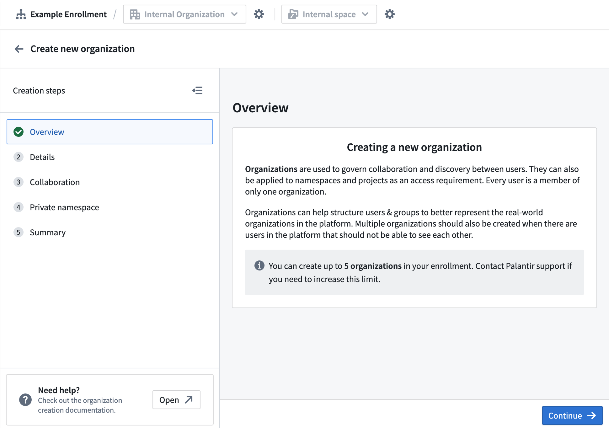
- Navigate to Control Panel > Organization management.
- Select Create organization.
- Configure the following organization settings:
* Name: Add a descriptive name for your consumer organization (for example, "Customer Portal Users").
* Organization administrator: Assign an appropriate admin user or group.
* Collaboration: Add your internal organization to allow discovery of your organization's Roles. Ensure all boxes are unchecked to prevent cross-organization user and group discovery.
* Private space: Choose
No for consumer organizations.
Note that enrollments are limited to five organizations by default.
Step 2: Disable member discovery
Next, configure your consumer organization to prevent users from discovering other users and groups within the organization, providing additional privacy and security isolation.
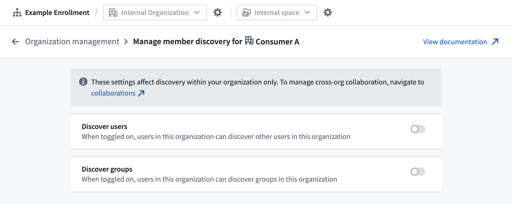
- Navigate to Control Panel > Organization management.
- Find your consumer organization and select Actions > Manage member discovery.
- Configure the following member discovery settings:
* Discover users: Disable this setting to prevent users in this organization from discovering other users in the same organization.
* Discover groups: Disable this setting to prevent users in this organization from discovering groups in the organization.
Learn more about cross-organization collaboration and member discovery.
In some B2B cases, user or group discovery within a consumer organization is expected for collaborative Foundry capabilities, like the Workshop comments widget. In such cases, you may ignore this step and elect to leave user and/or group discovery enabled.
Step 3: Configure the authentication provider and triaging rules
The next step in configuring consumer mode is to set up an authentication provider that automatically assigns consumer users to your consumer organization.
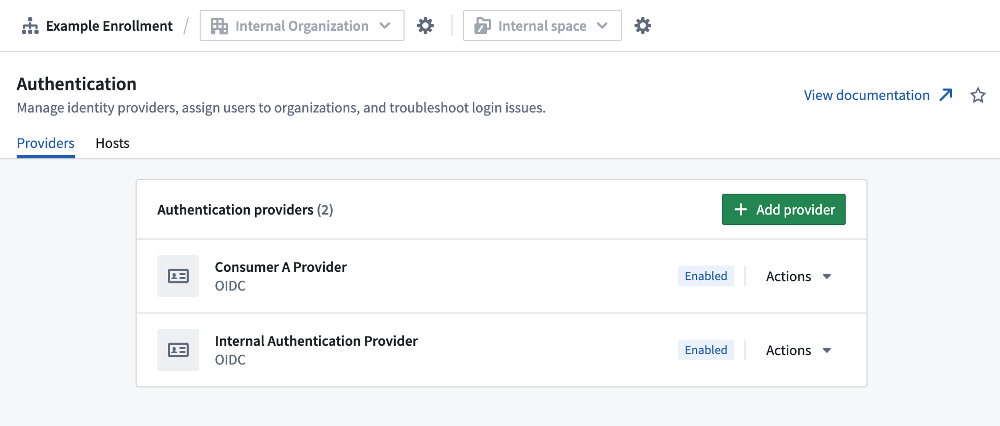
Create or update the authentication provider
- Navigate to Control Panel > Authentication, then choose the Providers tab.
- Select Add provider to configure a new authentication provider, or select an existing provider to edit.
- Configure the following provider settings:
* Provider type: Choose SAML or OIDC based on your requirements.
* Provider configuration: Complete authentication provider details according to your IDP.
* Egress policies: Add required egress policies for authentication.
* Multi-factor authentication: Enable if required by your security policies.
Set up organization triaging rules
- In the authentication provider settings, configure the Organization assignment.
- Select an automatic assignment rule to direct users to your consumer organization.
* Default organization: All users given the default organization.
* Advanced rule creation: Configure rules based on email domain, group membership, or other attributes. If none of the criteria match, the default organization will serve as fallback.
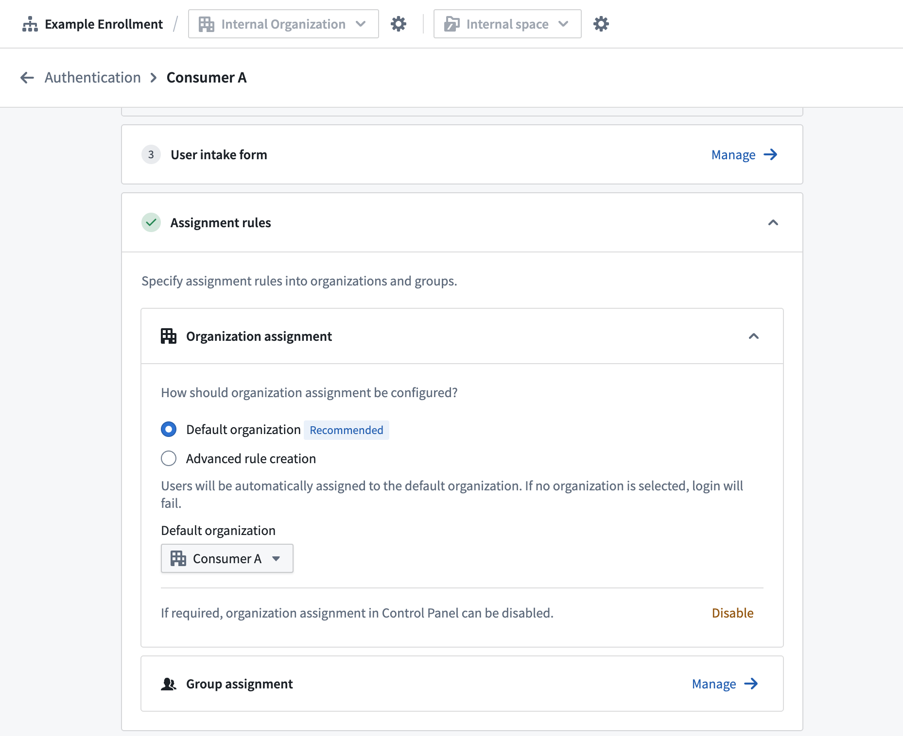
Step 4: Create rule-based consumer group
Create a group that aligns with your consumer organization for consistent permission management. After this step, you should have one or more automatically updating groups to permission all your consumer users. If all users belong to a single organization, you must create a single rule-based group for the organization; if users belong to multiple organizations, create a rule-based group for each organization.
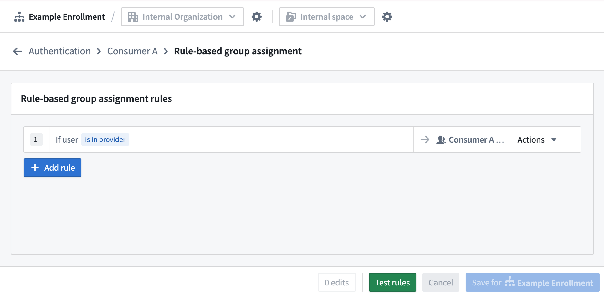
- From your authentication provider page in Control Panel, select Group assignment.
- Select + Add rule.
- From the Select group... dropdown menu, choose + Create new rule-based group and configure the following:
* Name: Match your consumer organization (for example, "Consumer Portal Users").
* Description: Add a description, such as "Contains all members from {your consumer} organization".
* Organization: Select the related consumer organization.
- Configure the rule parameters to match your organization assignment rules.
- Repeat steps 2 through 4 for each consumer organization.
Consumer Builder and Administrator groups
For ease of permissions management when building and managing consumer applications, we recommend designating both a "Builder" and "Administrator" group. Create these groups in your identify provider if managing groups outside Foundry, or refer to our managing groups documentation for creating the groups within Foundry.
Step 5: Configure a consumer role set
Configure a role set that provide appropriate permissions for consumer users.
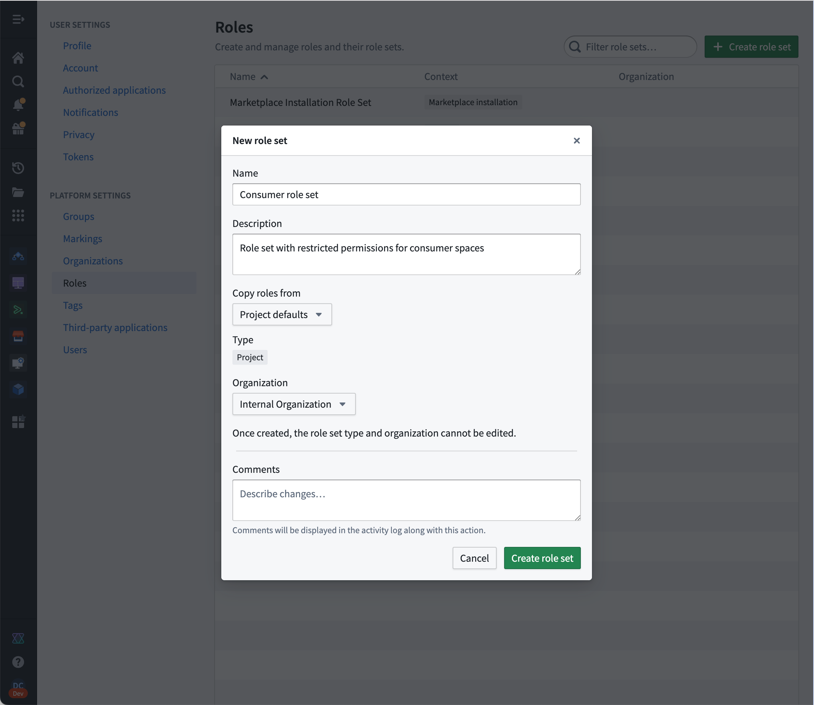
- Select your user image in the bottom left of your screen and select Settings > Roles.
- Select Create role set.
* Name: Add a descriptive name for a consumer role set (for example,
Consumer roles).
* Description: "Roles with reduced operations for consumer applications".
* Copy roles from: Project defaults
* Organization: Your internal organization
- In your new role set, select New role and add the following details to create your
Consumer role:
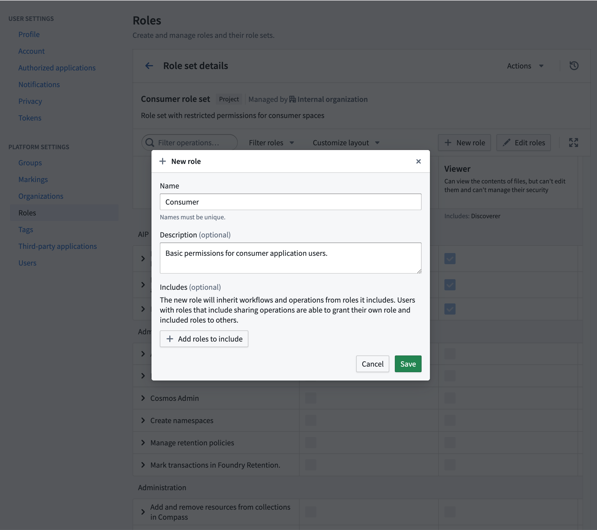
- Name: "Consumer"
- Description: "Basic permissions for consumer application users."
- Includes: Leave this optional section empty.
After creating the new Consumer role, add the following operations to the role:
carbon:view-workspaceeddie:view-aip-logicfoundry:read-datafunction-executor:execute-functionfunction-registry:read-contractfunction-registry:read-functionhubble:object-view:viewlime:searchobject-set-service:read-versioned-object-setobjects:read-dataontology:view-action-typeontology:view-datasourceontology:view-object-typeontology:view-relationsalt:blobster:readslate:run-query-v2slate:view-documentslate:view-stylesheetthird-party-application:view-application-websiteworkshop-server:view-module
Depending on the specific workflow, additional operations may be required. Review our documentation on understanding roles and operations for more details.
Step 6: Create a consumer space
Consumer spaces provide isolation and access control. After this step, you should have a dedicated space where consumer users can access projects.
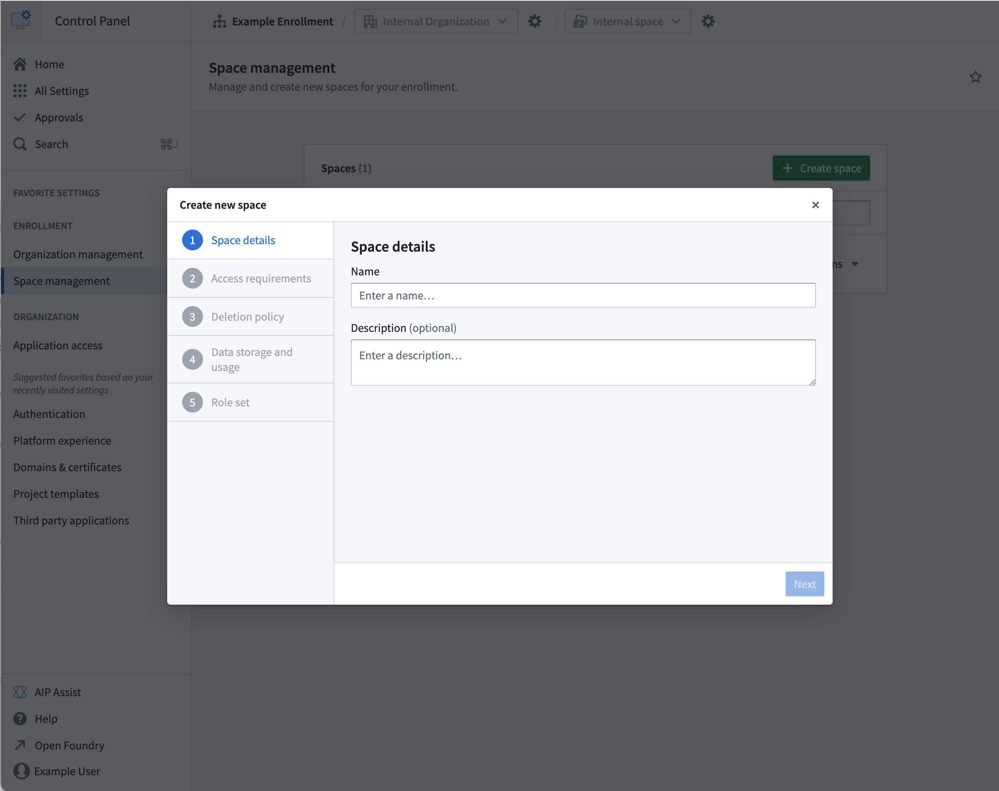
- Navigate to Control Panel â Spaces.
- Select Create space.
- Configure the following space settings:
- Name: Add a descriptive name for the consumer space.
- Access requirements:
- Set the internal organization as an access requirement.
- Set the consumer organization as an access requirement.
- Default permissions: Configure appropriate default permissions for consumer users.
Step 7: Create a consumer project template
Create a project template that automatically configures appropriate roles for consumer projects, ensuring consistent project creation.
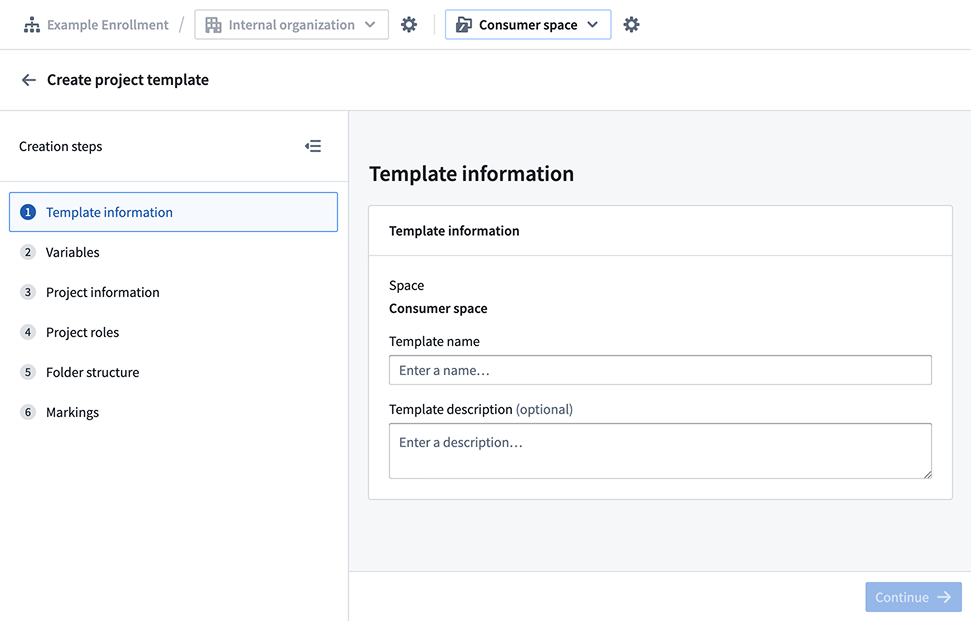
- Navigate to Control Panel > Project templates.
- Select Create template.
- Configure the following template settings:
- Template name: "Consumer Application Template"
- Template description: "Project template for consumer-facing applications"
- Template Variables: Keep the default
Name variable.
- Project information:
- Organizations: Choose Selected on project creation.
- Project roles:
- Default role: Select your
Consumer role.
- Existing user and groups: Add your Builder and Administrator groups, and grant the following roles to the relevant group:
- The "Builder" group has the
Editor role.
- The "Admin" group has the
Owner role.
Step 8: (Optional) Configure a consumer domain
Set up a custom domain configured for consumer access with automatic authentication redirect enabled.
Create a custom domain
Navigate to Control Panel > Domains & certificates, then follow our documentation guidance to create a custom domain for consumer use.
Configure a default authentication provider
- Navigate to Control Panel > Authentication > Hosts.
- Find your custom domain, then select Actions > Manage.
- Configure Default provider for the host to immediately redirect from the login page.
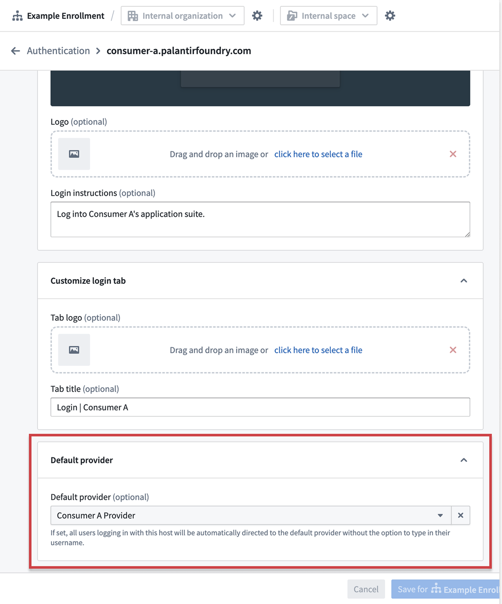
:::callout{theme="warning" title="Multiple IDPs configuration"}
When multiple IDPs are configured for a single domain, use the realm parameter to specify the provider:
https://consumer.yourdomain.com/workspace/application/[rid]?_realm=auth0-realm-id
You can find the realm ID Control Panel > Authentication > [Provider Name] > Advanced Settings > Realm.
:::
Step 9: Configure platform access restrictions
Prevent consumer users from accessing the broader Foundry platform and ensure they only have access to applications needed for their consumer experience.
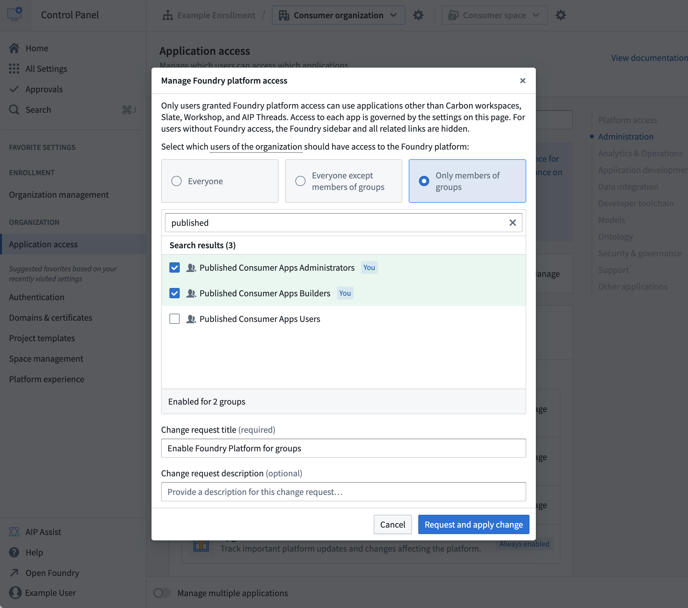
- Navigate to Control Panel > Application access.
- Select Foundry Platform, then Manage.
- Configure the following restrictions for your consumer organization:
* Disable platform access for consumer organization members using the rule-based group.
* Disable applications if they are not needed for consumer use:
- Workshop
- Slate
- AIP Threads
- Carbon
Step 10: Configure a default consumer application
Build a consumer application, and set up automatic redirection to the application on login.
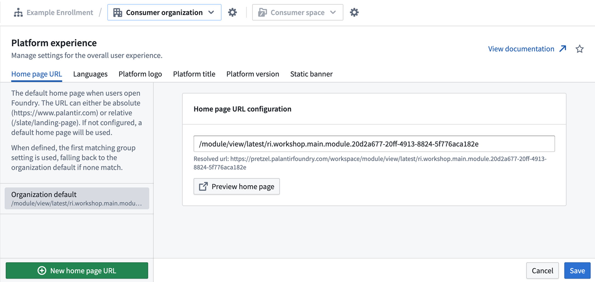
- Navigate to Control Panel > Platform experience.
- Select your consumer organization.
- Configure the following default application settings:
* Home page URL: Add the URL of the consumer application that users should be redirected to after login. Examples:
- For Workshop modules:
/module/view/latest/{module-rid}
- For Slate dashboards:
/slate/app/{dashboard-rid-or-permalink}
- For Carbon workspaces:
/carbon/{workspace-rid}
- Languages: Configure available languages for your consumer users with browser language preferences support.
- Platform title: Replace default "Palantir" branding with your organization's name.
- Platform version: Set the default platform version (
stable, beta, or prior), and configure version switcher access.
- Static banner: Add organization-specific messaging or announcements.
Your Foundry platform is now configured for consumer mode.
Verify consumer mode configuration
After configuring consumer mode for Foundry, verify your set up using the following validation process:
-
Create a project in the consumer space using the consumer project template:
* Navigate to your consumer space.
* Create a new project using the "Consumer Template".
* Verify that role assignments are applied automatically.
-
Create a temporary resource, such as a Workshop application, for permissions validation:
* In the consumer project, create a simple Workshop application.
* Configure basic functionality to test access permissions.
* Note the application URL for testing.
-
Create a consumer user in the consumer IDP and log in to Foundry:
* Create a test user account in your consumer identity provider.
* Verify the user is automatically assigned to the consumer organization.
* Test login flow and confirm automatic redirect to the consumer application.
-
Switch back to your user and use the Check Access panel:
* Navigate to the consumer project's file view.
* Use the Check access tab in the project Access settings to validate permissions:
- Confirm the consumer user has access to the consumer project.
- Verify the consumer user does NOT have access to internal projects.
- Check that role assignments are working correctly.
Troubleshooting
The organization assignment is not working
- Check triaging rules in the authentication provider configuration.
- Verify group membership criteria are correctly configured.
- Review user attributes being passed from your IDP.
Authentication redirects are not working
- Verify domain configuration and DNS setup.
- Check default provider settings for your domain.
- Review CORS and CSP configuration if using custom domains.
Role permissions are too restrictive/permissive
- Review role definitions and adjust permissions as needed.
- Test with consumer users to ensure applications function correctly.
Next steps
Once your Foundry consumer mode setup is complete, proceed with setting up your specific consumer application type:
- In-platform application: Quickly build low-code Workshop, Slate, or Carbon applications.
- OAuth application: Build OSDK applications hosted in Foundry.
- Client credentials application Create externally hosted applications with service-to-service authentication.